本期速览
02 人脸解锁缓存留存1.4万张原始照片
03 Agent记忆方案不敌Raw-RAG
04 Fireworks AI年收入10亿美元
06 claude-mem跨会话记忆自动注入
07 SaaS供应链攻破Anthropic
08 社工库数据多源于防守方基础漏洞
01｜中兴F50刷安卓13/OpenWRT
来源（X） · @EnoTZ2009 · 2026-10-31 13:13
又看到了大佬通过F50/U30可以直接打电话
改12G运行内存刷安卓13或者openwrt当手机用(其中已有项目支持把openwrt系统刷写进tf卡内)。
真的被24年上市的这款机器震撼到了！
哪怕是后面新出的V50，F50Pro在它面前依旧黯淡无光。
唯一的缺点就是有点费钱。
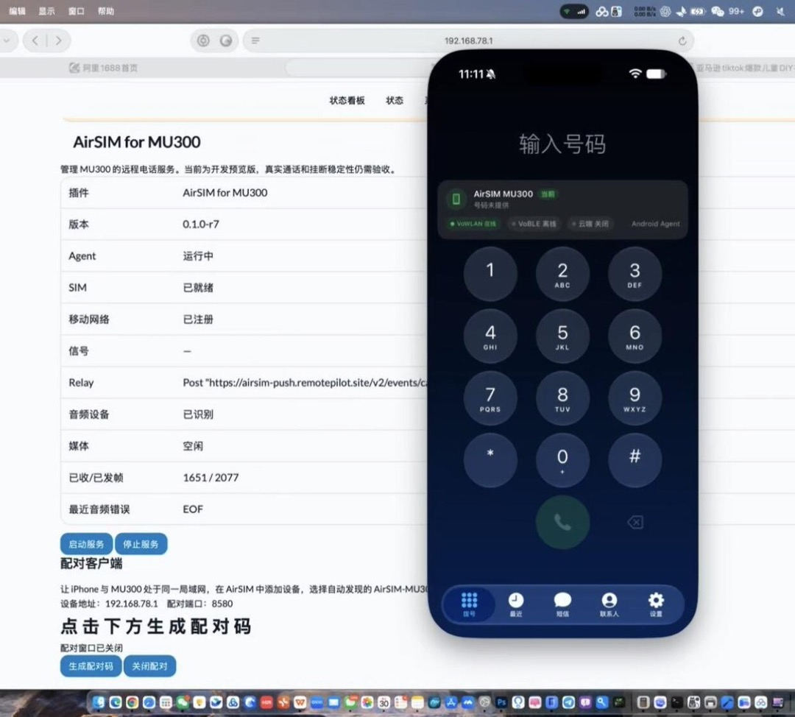
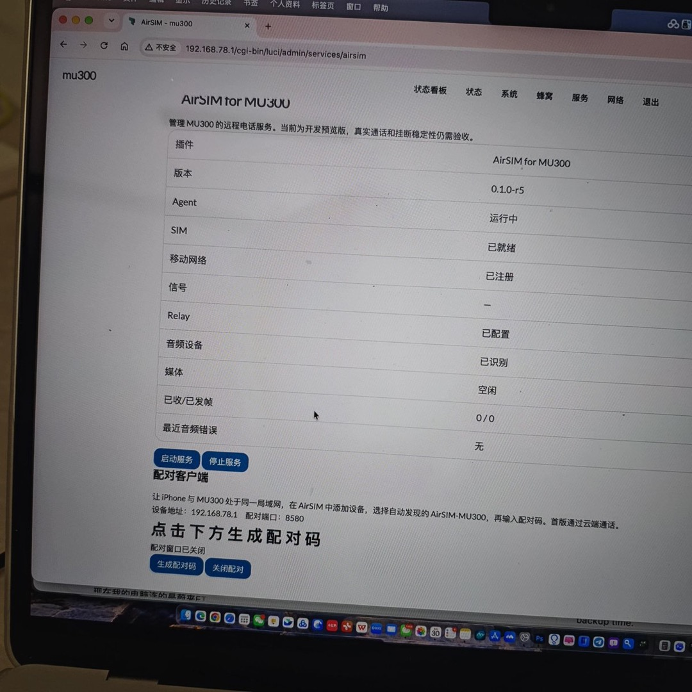
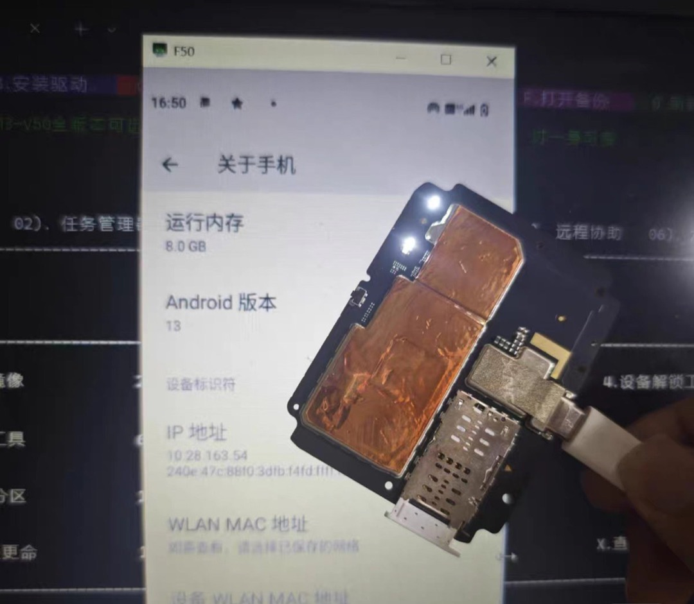
引用内容
EnoTZ @EnoTZ2009
安卓／openwrt双系统
支持代理，轻松使用VPN
Tailscale远程访问或者组内网穿透
酷态科10000毫安充电宝
北移冲浪卡：1440G(北京)+60G(全国)每月/200人民币一年/千兆速率
刚刚看了一下设备的价格：
插卡版自带256G存储配置，带256G内存-479人民币，减去256G的tf内存卡，479-200=279，相当于F50插卡版只要279元就行，比V50还要划算很多。
有需要的可以冲了，趁现在双十一。
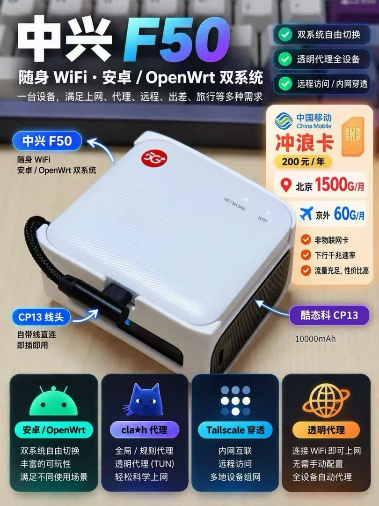
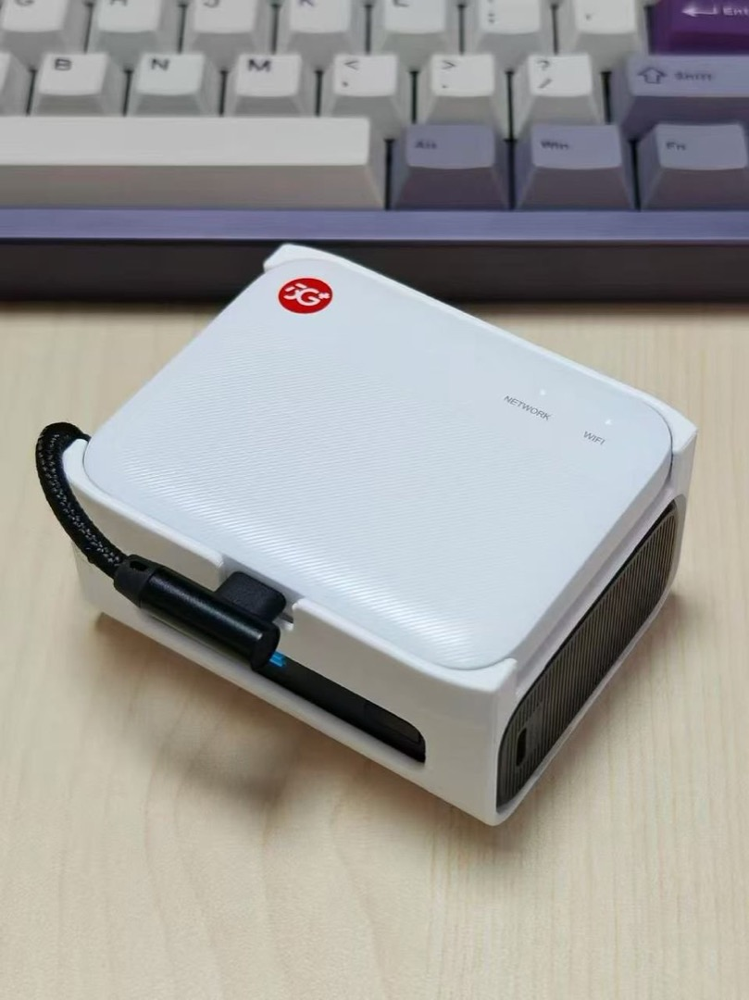
02｜人脸解锁缓存留存1.4万张原始照片
来源（X） · @0xSilver_Time · 2026-10-31 15:16
手机几乎在他每次拿起来的瞬间都在偷拍。躺在床上时也拍。在家也拍。
不是截图，是前置摄像头拍下的真实画面。
在火车上、车里、家里，甚至只是拿起手机看时间的时候。
这些照片就躺在系统缓存里。
每张都带日期、时间和 GPS 位置。相册里没有，最近删除里也没有。
他把手机连上电脑做了完整备份，然后让 Claude Code 找出相册之外的所有前置摄像头文件。
它翻出了 /data/system/users/0/faceunlock/cache 目录，还有 Google Play 服务里的另一个文件夹。
一万四千多个文件，既有普通照片，也有人脸解锁系统的红外画面。每一张都带时间和位置记录。
他开始翻这些照片，大部分是最近 15 个月的。然后他看到一个“2 秒前”刚生成的文件。
他当时正盯着这个文件夹看，手机还在继续拍他。
Google 和手机厂商声称，人脸解锁会把脸转成数学模型，然后立刻删掉图像。
但这台手机里原始画面就原样躺在文件夹里。往这个目录写数据的进程，有一部分是系统诊断服务。
几个还留着相机权限的老应用也能访问这个文件夹。
他关掉了诊断数据，撤掉了所有不必要应用的相机权限，清了缓存。但这些画面有多少早就漏到别处去了，他完全不知道。
想检查自己手机的话：连上电脑做完整备份（或者用 ADB），让 Claude 去找相册之外的前置摄像头文件。他的文件就在上面那个目录里。
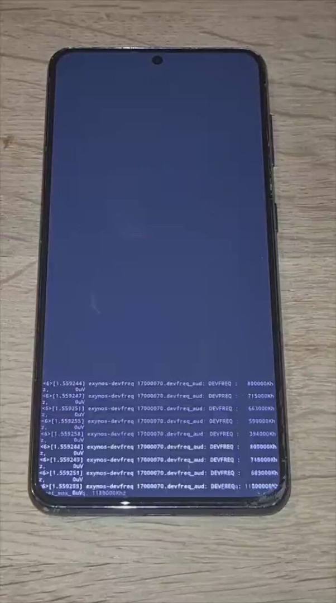

03｜Agent记忆方案不敌Raw-RAG
来源（X） · @Xudong07452910 · 2026-10-31 12:09
结果今天又看到一篇更直接的：
很多精心设计的 Agent Memory，最后还真不一定打得过最朴素的 Raw-RAG。
这两篇放在一起看挺有意思。
昨天那篇在解释「Memory 为什么会产生税」，今天这篇则在问：如果直接保留 raw history 做检索，究竟能走多远？
Raw-RAG 的方法非常简单：
保留原始对话历史，切成带重叠的文本块；先做 dense retrieval，再用 reranker 筛一遍，最后把最相关的原始证据交给 LLM 推理。
中间没有 LLM 摘要、记忆重写、UPDATE / DELETE，也没有复杂的图结构。
结果在 LoCoMo、LongMemEval、MEME 和 MemoryAgentBench 上，7 组模型设置里拿下 6 组第一，比最强的对比 Memory 系统高 0.13–5.53 个百分点。
论文进一步分析了原因。
很多问题真正需要的证据，并不只是某个「答案值」，还包括时间顺序、前后关系和依赖路径。
Memory 一旦把历史压缩成独立事实或摘要，这些关系很容易在整理过程中被削弱。甚至把完整的 transformed memory 全部交给模型，效果依然和直接看 raw evidence 存在差距。
当然，这也不代表 RAG 随便做就行。
论文里去掉 reranking 后，MemoryAgentBench 的分数从 48.32 降到 44.40；只返回一个检索结果，下降更明显。
所以问题可能没那么复杂：
先把原始信息保存好，再把 retrieval 和 reranking 做扎实，已经能覆盖很多长时对话 Memory 场景。
两篇论文连着看，给我们的提醒很重要：
做 Agent Memory 之前，最好先问一句，这套复杂机制，究竟比 raw-history RAG 多带来了什么？
如果连这个 baseline 都没稳定超过，复杂本身可能还算不上进步。
📎 arxiv: https://arxiv.org/abs/2610.30755
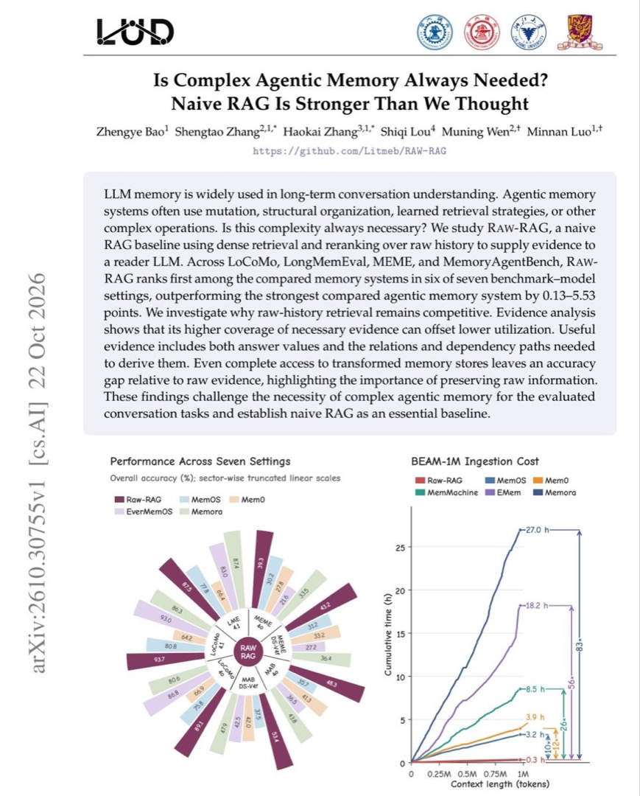
引用内容
Xudong Han @Xudong07452910
最近 Agent Memory 越做越复杂，但这篇《Memory Tax》发现了一个挺尴尬的结果：
很多专门设计的 Memory 系统，最后还不如直接对 raw history 做 RAG，而且成本更高。
作者把 Memory 的价值拆成两部分：
Memory Benefit：RAG 答错，但 Memory 答对的问题。
Memory Tax：RAG 本来能答对，经过 Memory 处理后反而答错的问题。
问题就出在「整理记忆」这一步。
历史被摘要、重写和结构化以后，一些细节会直接丢失；另一些虽然还在，却变得更难检索。
比如在 LongMemEval 上，Qwen3.6-27B 用两轮 RAG 能做到 81.4%，GPT-5.6 Luna 达到 90%，都高于对应的复杂 Memory 方案。
一个简单的修补反而很有效：
Memory 继续用，但同时保留 raw history 的检索通道，再把两边结果一起 rerank。
这篇工作也给我们做了一个提醒，给 Agent 加 Memory 之前，最好先拿最简单的 raw-history RAG 做个 baseline。
有时候，真正昂贵的并不是「没记住」，而是过早把原始信息总结掉了。
📎 arxiv: https://arxiv.org/abs/2610.34073
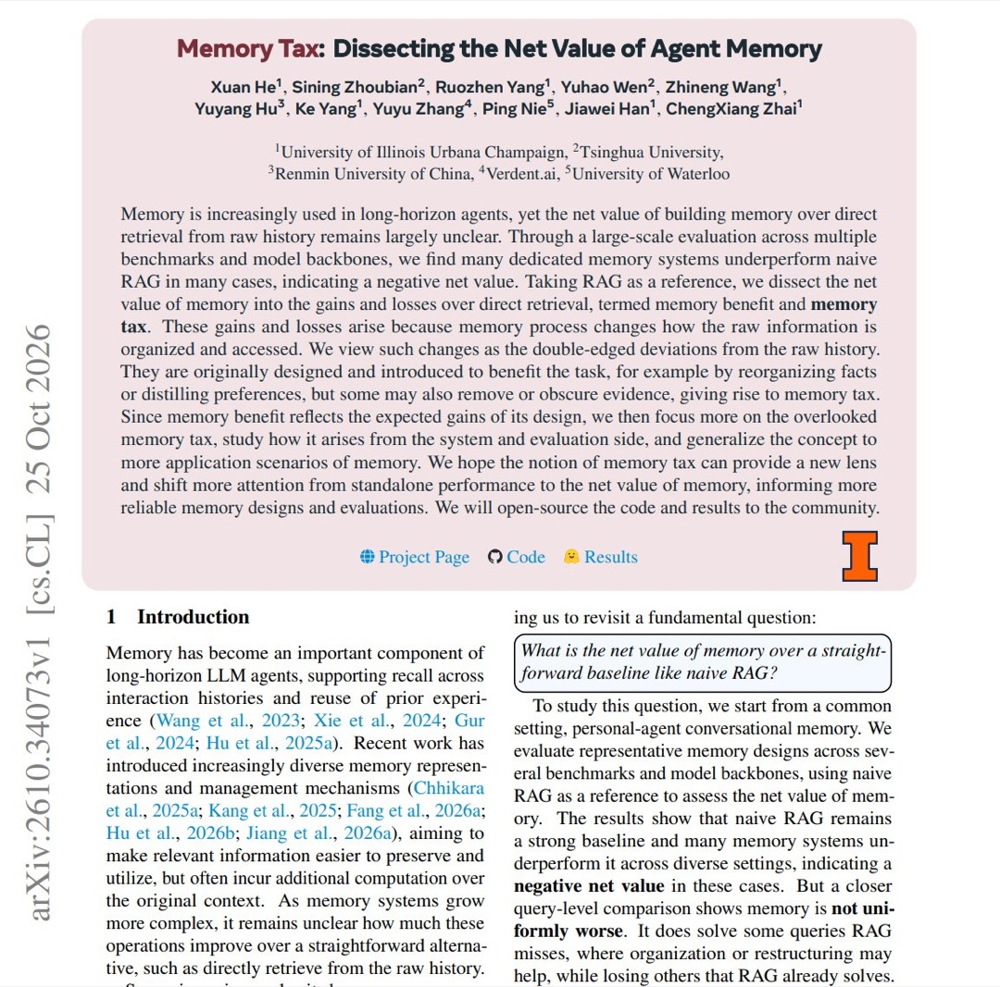
04｜Fireworks AI年收入10亿美元
来源（X） · @mushengziyue · 2026-11-01 07:12
2026 年 7 月，年化收入突破 10 亿美元
9 个月前还是 2.8 亿美元，涨了近 4 倍
创始人 Lin Qiao 以前在 Meta 负责 PyTorch
带着 6 名 PyTorch 工程师出来创业
不做大模型，专帮企业把开源模型跑得又快又便宜
每天处理超过 40 万亿个词元
全球 1 万多家企业客户，Cursor、Notion、Uber 都在用
淘金热里卖水卖铲子，也能做到 10 亿美元
你身边有没有这种“不抢风口、专卖刚需”的生意？
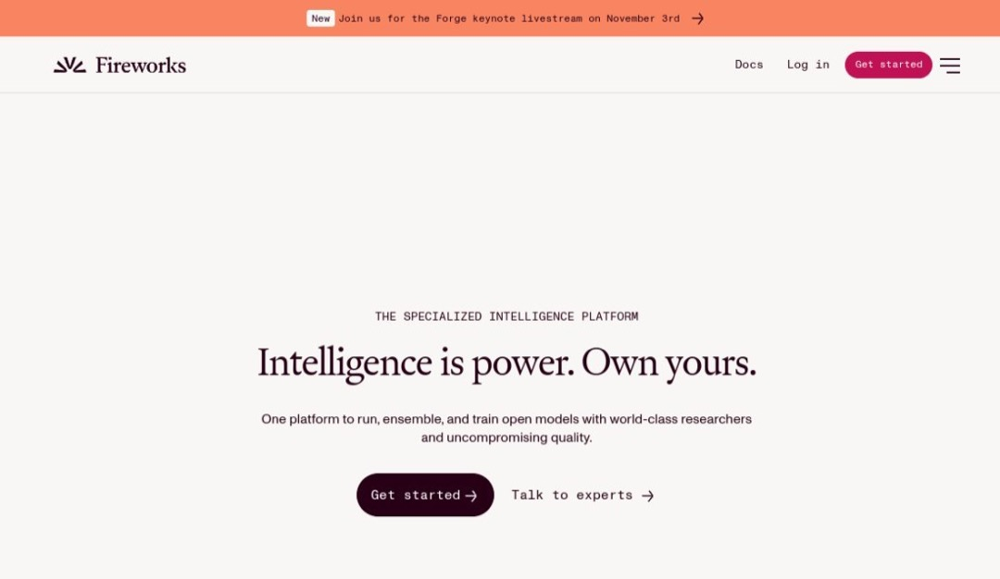
05｜Karpathy LLM Wiki插件版
来源（X） · @alin_zone · 2026-10-31 12:44
前面分享过 Karpathy 的 llm-wiki.md，很多人问有没有不用敲命令的方案，这不就来了吗？
这个插件叫 Karpathy LLM Wiki，已经上架 Obsidian 官方插件市场，直接搜索安装就行，不需要终端、不需要 Python，也不需要另外装 Claude Code
而且它不是简单地帮你写摘要，而是把 Karpathy 的三个操作全部做成了 Obsidian 命令：
1、Ingest：选一篇笔记、一个文件夹，或者勾选多个文件，AI 会自动提取里面的人物、公司、概念，生成独立的 wiki 页面，并且自动加上双链
2、Query：右侧会打开一个聊天面板，只根据你自己的笔记回答问题，回答里的双链可以直接点回对应页面，好的回答还能一键存回 wiki
3、Lint：一键检查失效链接、孤立页面、重复页面和前后矛盾的内容，再点一下 Smart Fix All 就能自动修复
还有几个我觉得比较实用的点：
1、不用向量数据库，直接顺着你笔记里的双链去找相关内容
2、支持 16 家以上的模型，Claude、GPT、Gemini、DeepSeek、Kimi、GLM 都可以，也能用 Ollama 跑本地模型
3、除了 Markdown，PDF、图片和 Office 文件也能处理
4、不会修改你原来的笔记，所有内容都生成在 wiki 文件夹里
5、界面支持简体中文，wiki 也可以直接用中文生成
不过笔记比较多的话，批量摄入建议用长上下文的云端模型，API 费用需要注意一下
项目地址：https://github.com/GD4AI/obsidian-llm-wiki
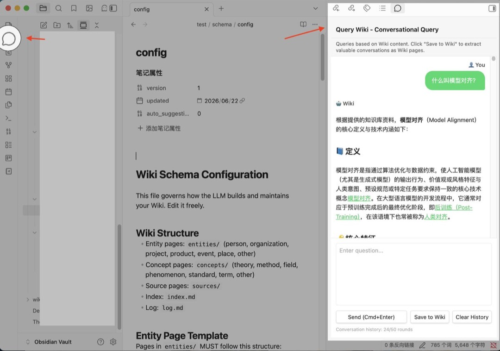
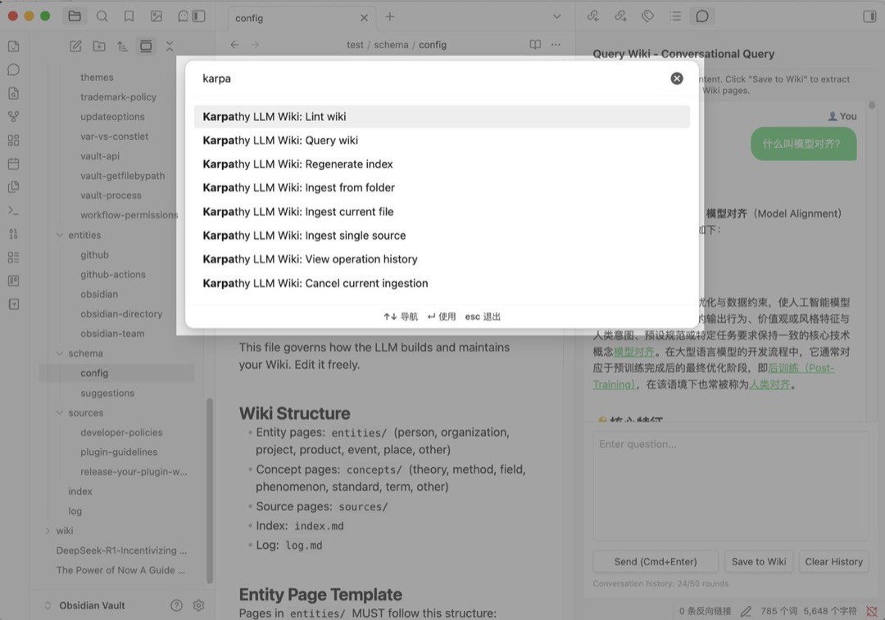
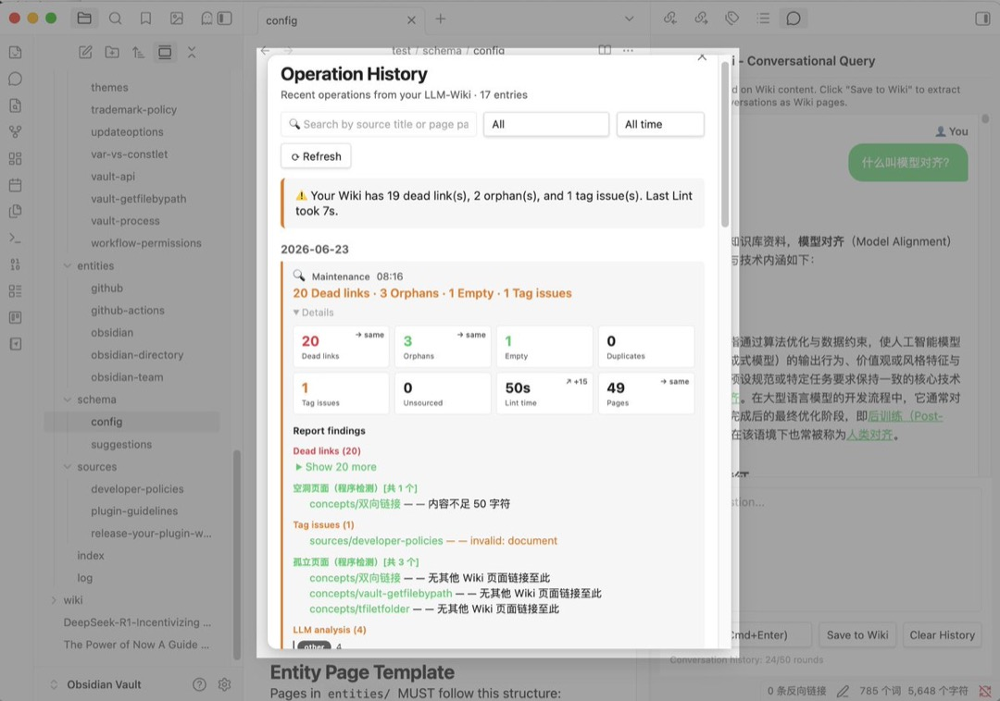
引用内容
阿蔺A-Lin @alin_zone
最近一直在折腾 AI 笔记，试了一圈 Obsidian 插件，最后发现最好用的还是 Karpathy 分享的 llm-wiki.md
它的思路很简单：Obsidian 是 IDE，LLM 是程序员，wiki 就是代码库
而且它不是简单地让 AI 帮你写摘要，而是让 AI 负责整个知识库的维护，整套流程只有 3 个操作：
1、Ingest：丢进去一份资料，AI 自动写摘要，同时把库里所有相关页面一起更新
2、Query：直接对着 wiki 提问，好的回答会被存成新页面，知识库越用越厚
3、Lint：定期检查有没有前后矛盾、过时的内容、没人链接的孤立页面，还有该加没加的交叉引用
以前我们手动整理笔记、手动加双链，其实很难坚持。现在就是放进资料，AI 负责改写和链接，Lint 负责查漏补缺
现在社区里也已经有不少现成的实现可以直接用：
graphify：把代码库、文档、PDF 变成可查询的知识图谱
claude-obsidian：把资料整理成带引用、互相链接的笔记，再基于笔记库回答问题
mcp-obsidian：一个 MCP 服务器，让 Agent 直接读、搜、写整个 Obsidian 库
另外这个方法本身跟用哪个模型无关，Claude、DeepSeek 或者本地模型都能接进来，感兴趣的可以先收藏🔥
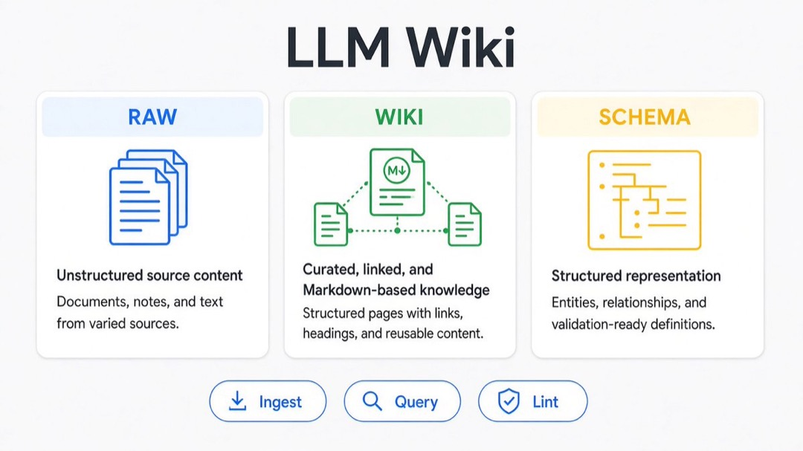
06｜claude-mem跨会话记忆自动注入
来源（X） · @AeternesGosh · 2026-10-31 14:54
claude-mem 就是来解决这件事的。它是一个开源工具，给 coding agent 加上跨会话的持久记忆。今天登上 GitHub Trending 日榜，一天涨了 1,140 星，总数约 106k。
【它是怎么工作的】
1. 自动记录 agent 在会话里做过的事
2. 用 AI 把这些记录压缩成精华
3. 下次开新会话时，把相关的上下文自动注入进去
整个过程不需要你手动整理笔记，也不用每次复制粘贴一大段背景说明。
【支持哪些 agent】
Claude Code、Codex、OpenCode、Cursor 等主流 coding agent 都能用。
【上手前先知道】
默认用的是官方托管的记忆服务，需要登录，有 30 天免费试用。不想托管的话，可以改成本地模式（--provider host），或者用你自己的 key。
【谁最需要】
· 长期迭代同一个项目的人
· 一个项目会开几十个会话、经常断点续做的人
· 同时用好几个 agent、不想每个都重新喂一遍背景的人
让 AI 像一个记得前情的老同事，而不是每天都失忆的新人。
收藏起来，下次开新会话前装上试试 👇
https://github.com/thedotmack/claude-mem
07｜SaaS供应链攻破Anthropic
来源（X） · @mylifcc · 2026-10-31 14:02
简单来说，前 DOGE 成员创立的估值 14 亿美元 AI 安全公司 Cathedral，用 AI Agent 顺着第三方软件漏洞不到 12 小时杀进了 Anthropic 内网；随后社区爆出猛料称 Anthropic 严重瞒报，连满是核心机密的 Slack 都被拿到了最高管理员权限。
📌 核心看点
1️⃣ 不到 12 小时的 AI 闪电战： Cathedral 团队（今年 7 月刚拿了 a16z 和红杉等 1.6 亿美元融资）利用 AI Agent 挖掘第三方商业软件漏洞，在不到 12 小时内读取了 Anthropic 的会议纪要、薪资 Offer 以及讨论前沿模型的 Slack 记录。
2️⃣ 官方辟谣 vs 圈内吃瓜： Anthropic 官方坚称仅涉及有限的销售、HR 和 IT 系统，模型权重（Model Weights）和源码绝对安全，并指责对方违规夸大；但 Reddit 热帖晒出“前 OpenAI 研究员”爆料，称对方其实拿到了 Slack 全局管理员权限，所有研发秘密一览无余。
3️⃣ SaaS 供应链成大模型实验室软肋： 就算模型本身固若金汤，外围办公软件（Slack、销售与 HR 工具）依然是极易被 AI Agent 攻破的突破口，评论区不少安全工程师坦言“初创公司极爱在 Slack 里乱放密钥和机密”。
当 AI Agent 开始全天候自动挖漏洞，顶尖 AI 实验室防得住正门，未必防得住第三方 SaaS 的后窗。
08｜社工库数据多源于防守方基础漏洞
来源（X） · @zhangsheng5w · 2026-10-31 22:30
但我从业这大半年，见过的现实简直幽默得不行，绝大多数的数据泄漏，根本不需要任何高级渗透技术，纯粹是防守方自己在送。
社工库里滚动的海量数据，大头首先是国内各种商业应用。
不管是 Web 端、小程序还是 App，最要命的通病就是接口不做鉴权、身份校验形同虚设。
最典型的水平越权漏洞：前端发起查询，后端压根不管你持有的 Token 到底有没有权限查这个对象。随便抓个包，把参数里的手机号、用户 ID 或者身份证号字段改一下，写个几十行的自动化脚本直接批量遍历，几万甚至几十万用户的姓名、住址、明文联系方式就被顺手牵羊全拖走了。很多所谓的“黑客”，本质上就是写了个脚本，在没锁门的大仓库里搬砖而已。
另一个重灾区是教育系统。
中国很多高中、大学的教务系统、迎新系统，安全防线基本约等于裸奔。既没有内网隔离，也没有 VPN 限制，连个最基本的 WAF（防火墙）都不套，直接把管理后台大刺刺地挂在公网上。更离谱的是，这些系统大多是第三方小作坊拿老旧的开源模板或者通用框架攒出来的，技术指纹一抓一个准。攻击者只要识别出指纹，去网上翻翻已公开的历史漏洞甚至默认弱口令，几分钟就能把后台爆开。
你在社工库里看到的大批高中生、大学生的身份证号、家庭住址、高考成绩，绝大多数就是这么从公网服务器上直接流出来的。
更搞笑的是各种自建服务和网络面板，最典型的就是很多人用的 3x-ui 面板。
不管是自己搭节点还是搞小圈子合租，一堆人直接在 VPS 上拉个一键脚本就开跑，安全意识直接归零：端口常年用默认的，后台账密直接留着系统默认的 admin/admin，连个安全根路径（Base Path）都不设，直接裸奔在公网。国内外的空间测绘引擎（比如 FOFA、Shodan）一搜就是一长串。黑产或者扫描器顺着特征扫进去，面板里配的那几十上百个客户端一览无余——节点备注里写的真实姓名、微信号、Telegram、绑定的国内邮箱，甚至连带每个人的连接日志和真实出口 IP，全被一锅端。本来建节点是为了隐私，结果后台不设防，反倒成了把自己的上下游关系链主动打包送进社工库的精准开盒发射器。
再往终端看，很多人自己的电脑上压根没有设置任何 DNS 防泄漏。
不少人以为电脑挂上代理软件自己就彻底“隐身”了，结果底层的网络配置一塌糊涂：TCP 流量看似走了代理，但系统底层的 DNS 查询根本没接管，或者 IPv6 裸奔、WebRTC 没做任何防护，电脑依然拿着明文 UDP 53 端口疯狂往本地运营商的 DNS（甚至 114.114.114.114）发请求。你在什么时间点解析了什么域名、连向了哪个特定服务，运营商后台全在记日志，而且这个日志直接精准绑定着你宽带的实名身份。
更别提访问一些特定网络环境时，DNS 一泄漏，你的本地真实 IP 和物理归属地瞬间回显。稍微懂点关联追踪的人，拿时间戳和访问特征一交叉比对，都不需要碰你的电脑，你线下的真人画像直接就拼完整了。
至于不少人动不动怀疑的“警务系统泄漏”，我以前接触过一些这类内网系统，只能说外行对体制内的监管缺乏基本常识。那套系统里，所有的检索和翻阅动作全是全链路留痕的：谁的账号、在什么时间、哪个物理终端、查了谁的信息，日志清清楚楚，后台还会定期做异常查询审计。体制内人员赌上自己的铁饭碗甚至人身自由，去赚黑产那点风险收益比极低的人头钱？现实中几乎没有哪个正经人会傻到这种地步。
入行这大半年，最大的祛魅就是发现“世界真是一个巨大的草台班子”。也千万别对所谓的大厂有什么技术崇拜，大厂里写出低级逻辑漏洞、连基础安全规范都不遵守的程序员一抓一大把。市面上大部分的信息安全危机，根本不是攻击者的矛有多锋利，纯粹是防守方的盾从一开始就是用纸糊的。
引用内容
zhangsheng @zhangsheng5w
你说迁移需要人力和时间，这我当然知道。
但问题是，这些成本到底有多大？
首先，修复高危漏洞不等于必须把整个后台系统推倒重构。
很多情况下，可以先升级到官方修复版本，再逐步评估和迁移。
其次，人力和时间本来就是企业安全预算的一部分。依赖盘点、漏洞扫描、版本升级、兼容性测试、灰度发布，这些都是成熟研发团队应该具备的基本能力。
一家管理着数以亿计用户资产的交易所，拥有庞大的研发和安全团队，难道连第三方开源组件的漏洞修复都要因为人力和时间成本而一拖再拖？
软件本身免费，迁移确实需要成本，但安全从来不是可有可无的额外开支，而是交易所经营的基本成本。
更何况，事前投入一些工程资源修复漏洞，和事后承担整个系统被攻破的风险，哪个更贵？
别把企业正常应该承担的安全维护成本，包装成多么巨大的技术难题。
@realDonaldTrump @elonmusk